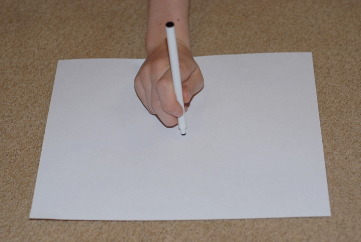
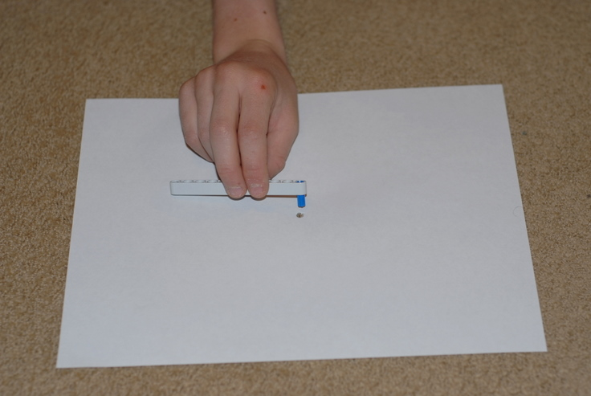
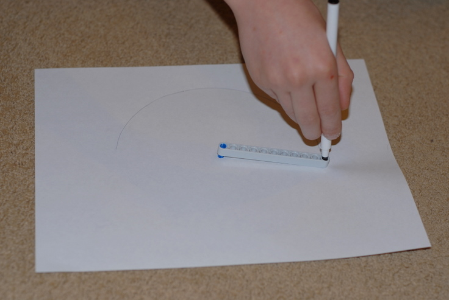
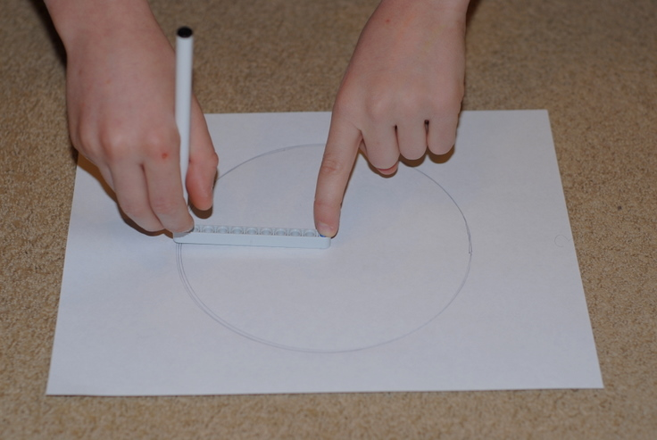
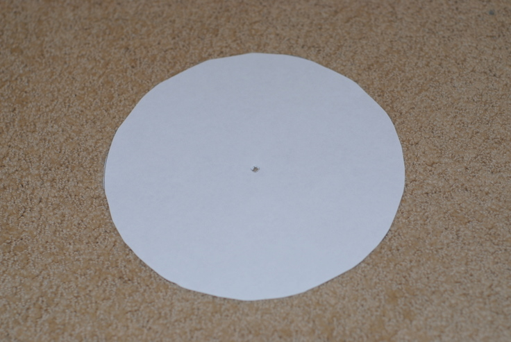
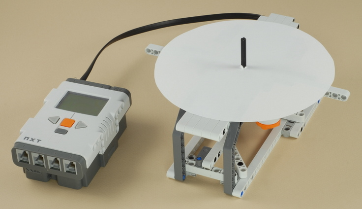
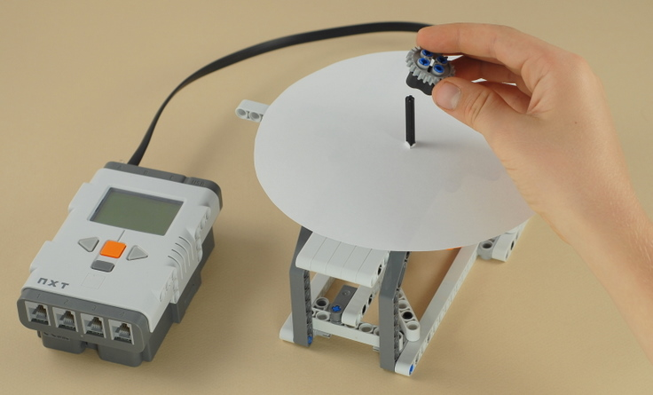
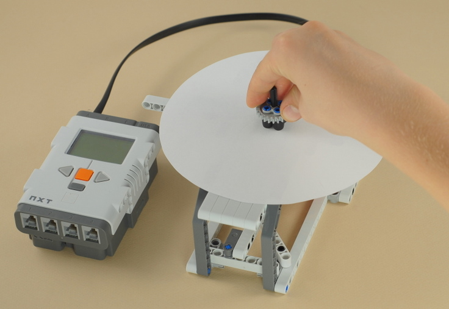
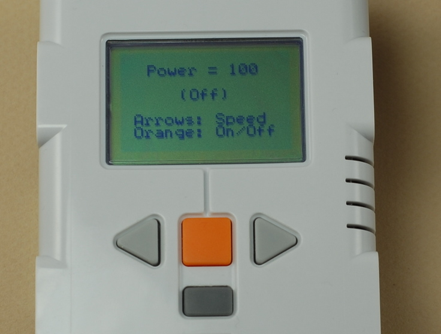
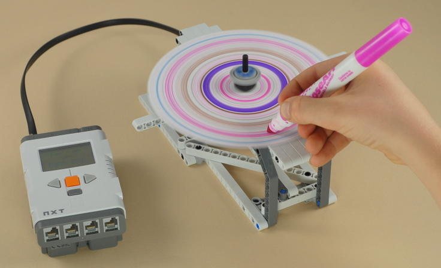

Fun Projects for your LEGO� MINDSTORMS� NXT!
|
|
Fun Projects for your LEGO� MINDSTORMS� NXT! |
| Spin Art |
|
1
| Use a pencil or pen to poke a hole near the middle of
a sheet of clean white paper.
Important: Make sure both sides of the paper you use are clean and not printed or written on in any way. Do not turn over your circles and use the bottom side after drawing on the top. Any ink on the bottom side of the paper circles will rub off onto the white LEGO beams of the Spin Art machine. This includes paper already printed on one side with laser printer or copy machine toner or ink jet printer ink. An alternative to always using clean paper would be to cut out a disk of clean light-weight cardboard or heavy paper to put under the paper to protect the machine from ink. You could also make this disk slightly larger than your paper circles to protect against ink at the edges. |

2
| Using the separate 11-hole beam with the blue peg at
one end, insert the blue peg into the hole in the paper, then insert a
pen or pencil into the last hole at the other end of the beam and trace
out a circle, using a finger to help hold the peg in the hole if
necessary.
Working on carpet works well to keep the peg in the hole, or you can hang the peg off the edge of a table and do half of the circle at a time. |



3
| Cut out your circle with scissors. The more accurate your circle is, the more balanced your circle will be and the faster it will spin. |

4
| Put the paper circle through the spindle on the Spin Art machine so that it lays flat on the LEGO table. |

5
Use the gear with the rubber pieces, with the
rubber side down, to clamp the paper to the spindle.
|


6
| Run the Spin A Program, then press the orange button on the NXT to start the paper spinning. You can use the gray left and right arrows to control the speed of the motor and the orange button to start and stop it. |

7
| While the paper is spinning, gently press markers, colored pencils, or whatever onto the part of the paper that has the flat white LEGO table under it to make designs. |

8
| Here are sample spin arts that my kids made. Can you figure out how to make the spiral? After making it, try viewing the spiral spinning at different speeds to get an interesting effect. The design on the bottom is a different idea: Draw on the paper ahead of time and then spin it to see what it looks like spinning. In this case, the blue and yellow combine to make it look green when spinning. |

|
Copyright
�
2007-2009 by Dave Parker. All rights reserved. |